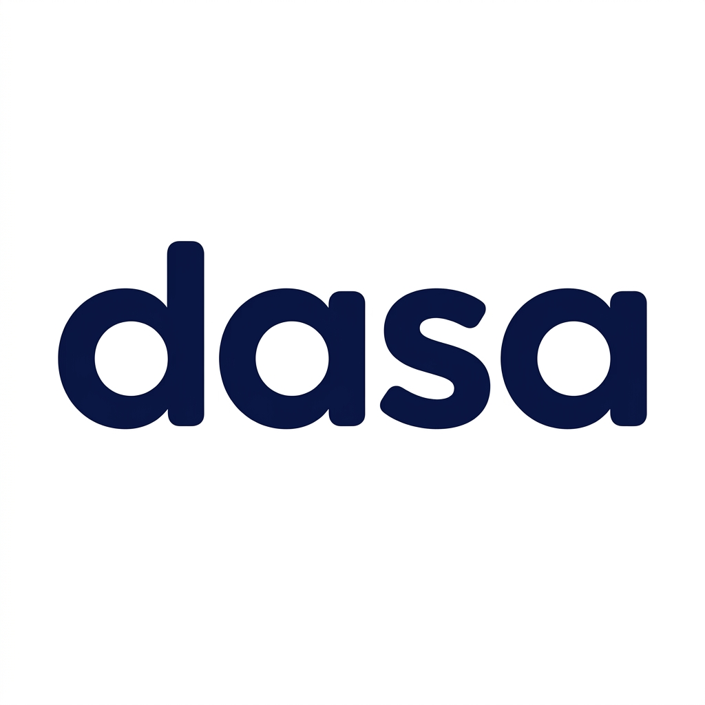
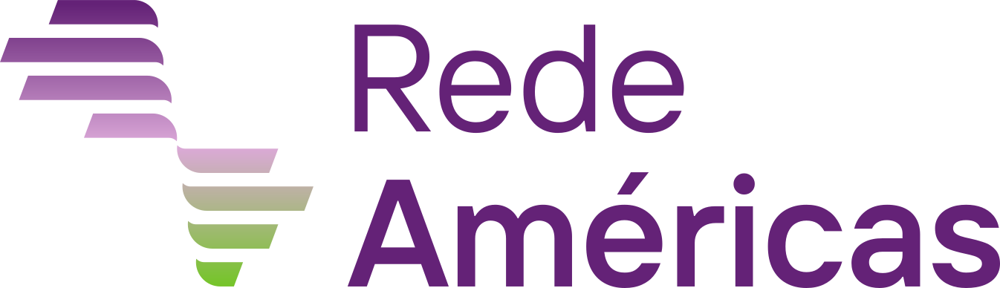
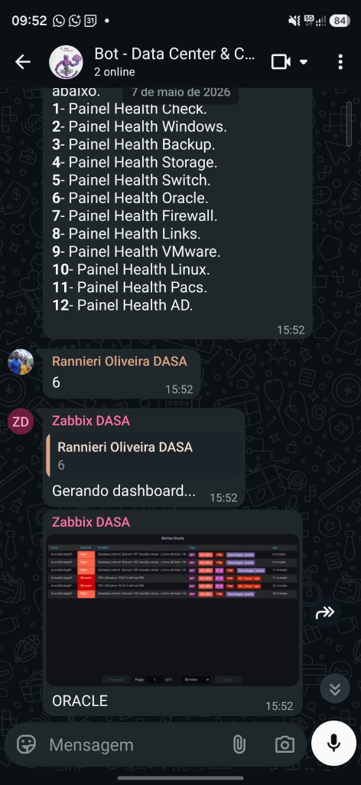
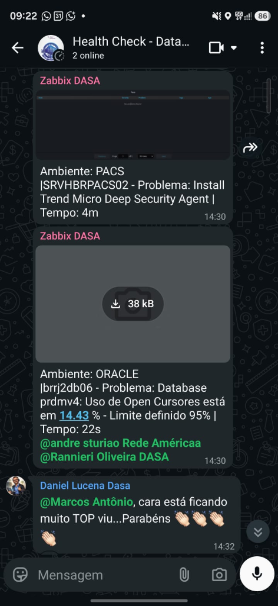
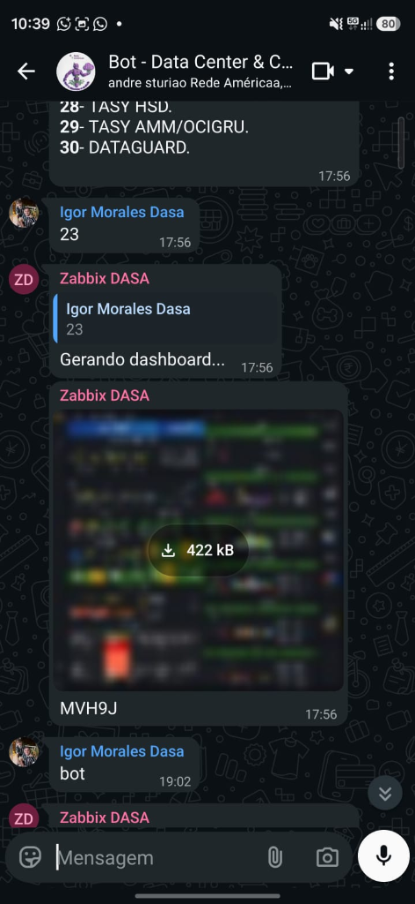
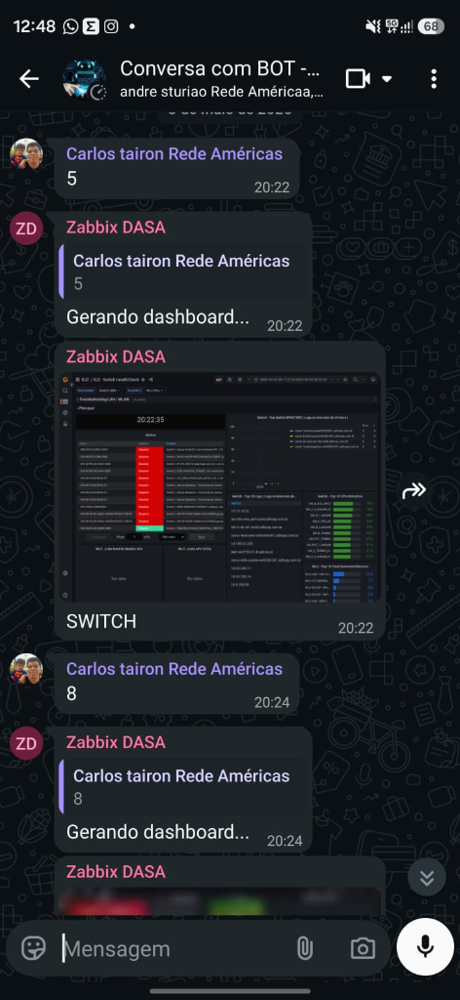

Serviço gerenciado de monitoramento ativo — alertas em tempo real, dashboards analÃticos e resposta automatizada para a infraestrutura da sua empresa.
Coleta de métricas de servidores, bancos de dados, firewalls, links de internet, storages e aplicações. Alertas inteligentes com severidade configurável.
Painéis visuais em tempo real para bancos de dados, redes e serviços crÃticos. Visibilidade total da saúde da infraestrutura em um único lugar.
Bot integrado envia alertas imediatos ao time técnico via mensageria. Suporte a grupos, agendamento e interação sob demanda a qualquer momento.
Sessões ativas, VPN, links de internet (upload/download/perda), latência e firewall com alertas automáticos de degradação.
Sessões ativas, tablespace, locks, performance de I/O e disponibilidade de instâncias crÃticas de missão hospitalares.
Relatórios gerados automaticamente e enviados ao time. Agendamento flexÃvel e integração com fluxos existentes do cliente.
Agentes de monitoramento coletam métricas da infra em tempo real
Regras inteligentes avaliam thresholds e disparam eventos
Dashboards analÃticos exibem o estado em tempo real
Bot de notificações comunica o time com severidade e detalhes
Confirmação automática de recovery enviada ao grupo
Configure horários especÃficos para receber resumos do ambiente — manhã, tarde e noite.
Consulte o status da infra a qualquer momento enviando uma mensagem ao bot.
Notificações segmentadas por área: banco de dados, redes, servidores, aplicações.
Relatórios visuais gerados e enviados automaticamente ao time técnico e gestores.


Infraestruturas hospitalares exigem disponibilidade máxima.
Nosso NOC garante que qualquer falha seja detectada e comunicada em segundos.

Time solicita dashboard via bot e recebe instantaneamente o painel de alertas do ambiente Oracle, incluindo uso de cursores abertos e status de PACS.

Menu interativo com mais de 30 ambientes monitorados: TASY, DataGuard, VMware, Oracle, PACS, AD, Links, Firewall e muito mais, tudo via bot.

Dashboard gerado sob demanda mostrando Top 10 hosts com maior latência, alertas de conectividade e status de todos os switches da rede.

Painéis coloridos com visão consolidada de todos os servidores e serviços crÃticos por unidade hospitalar, enviados automaticamente pelo bot.
💬 "cara está muito TOP viu...Parabéns ðŸ‘ðŸ‘ðŸ‘" — Igor Morales - Gerente de Ti - Rede Américas
Entre em contato e receba uma proposta personalizada para a sua infraestrutura.
📧 Solicitar Orçamento 💬 WhatsAppMSS (Managed Security Services) — proteção proativa combinando recursos humanos altamente qualificados, tecnologias avançadas e inteligência de ameaças em tempo real.
Monitoramento contÃnuo de sistemas, redes e aplicativos em busca de atividades suspeitas. Análise de logs, detecção de intrusões e identificação de eventos de segurança em tempo real.
Avaliação de ameaças emergentes com inteligência atualizada. Compreensão das táticas, técnicas e procedimentos (TTPs) dos invasores para melhor detecção e resposta a incidentes.
Identificação e gerenciamento de vulnerabilidades em sistemas e infraestrutura. Inclui testes de penetração, avaliação de segurança, patch management e recomendações de mitigação.
Gerenciamento completo de incidentes: investigação, contenção, recuperação e análise forense. Desenvolvimento de planos e suporte especializado para minimizar o impacto de ataques.
Implementação de MFA, controle de acesso privilegiado (PAM) e gerenciamento de identidade para reforçar a segurança das contas e proteger contra acessos não autorizados.
Coleta, armazenamento e análise de logs de segurança para detectar violações. Geração de relatórios de conformidade para atender requisitos regulatórios como LGPD e ISO 27001.
Orientação estratégica especializada em segurança cibernética. Desenvolvimento de polÃticas, procedimentos e estratégias adaptadas à s necessidades e riscos de cada organização.
O Wazuh é o cérebro do nosso CSOC. Plataforma open-source de SIEM que centraliza o monitoramento de logs e eventos de segurança de endpoints, redes e aplicações. Detecta ameaças em tempo real com regras avançadas de correlação e motores de análise comportamental.
Plataforma SOAR que automatiza respostas a incidentes, libera a equipe para análises crÃticas e reduz drasticamente MTTD e MTTR.
Vigilância contÃnua da Deep Web e Dark Web para identificar ameaças emergentes, vazamentos de dados e atividades maliciosas antes que impactem nossos clientes.
Base de conhecimento global de táticas e técnicas de adversários. Permite mapear e responder de forma eficaz a TTPs reais observadas em campo.
Framework de governança e gestão de TI que alinha os objetivos de segurança com os objetivos de negócio. Garante que a TI gere valor e gerencie riscos.
Operamos alinhados às melhores práticas internacionais de segurança da informação, garantindo conformidade e maturidade operacional.
Fale com nossos especialistas e solicite uma avaliação gratuita do seu ambiente de segurança.
📧 Solicitar Avaliação 💬 WhatsApp